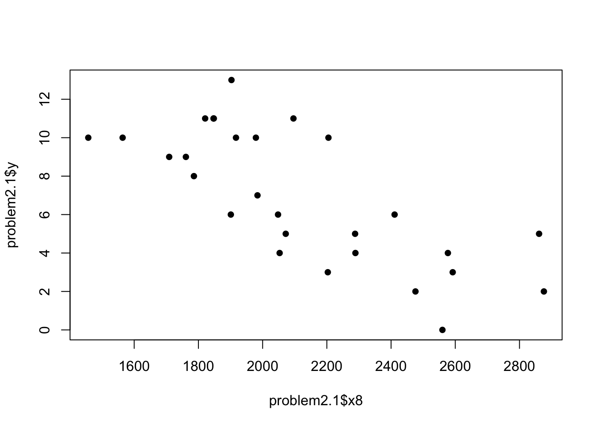
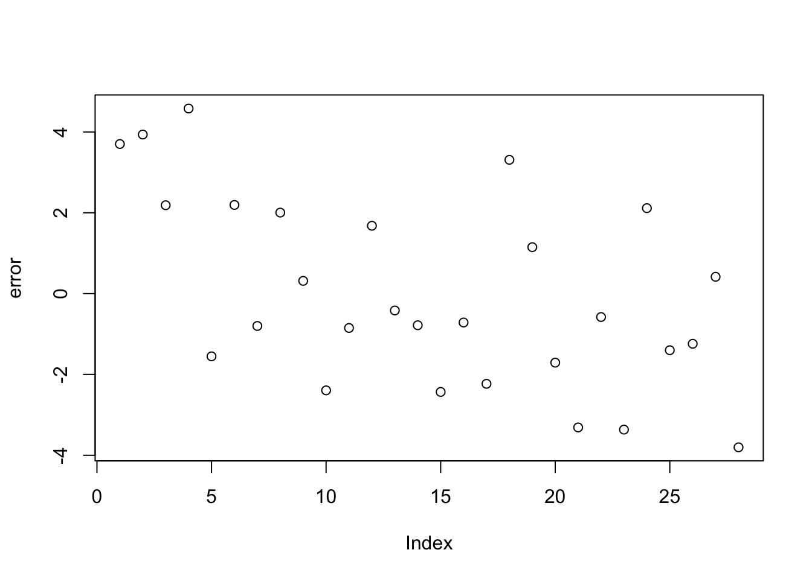
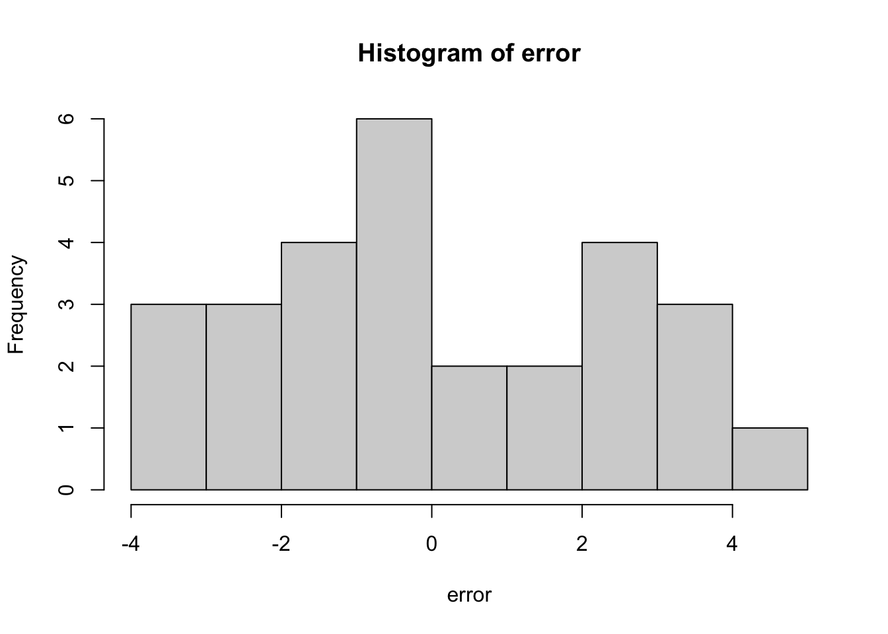
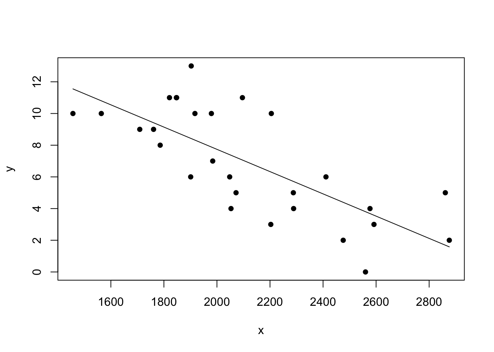
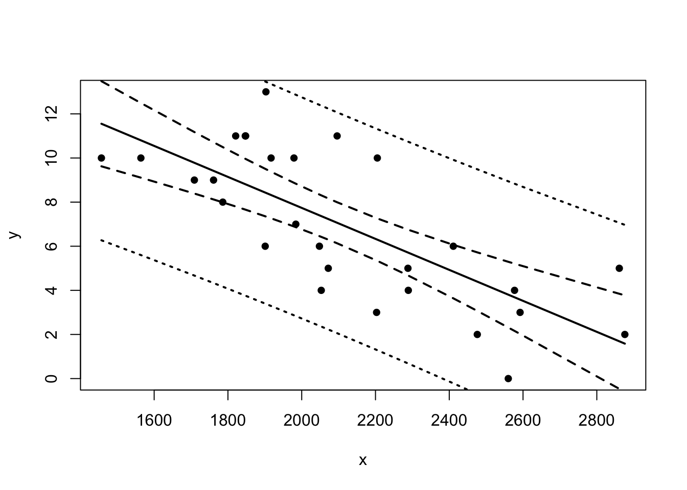

# libraries
library(readxl)
library(tidyr)
library(magrittr)##
## Attaching package: 'magrittr'## The following object is masked from 'package:tidyr':
##
## extractlibrary(dplyr)##
## Attaching package: 'dplyr'## The following objects are masked from 'package:stats':
##
## filter, lag## The following objects are masked from 'package:base':
##
## intersect, setdiff, setequal, unionproblem2.1 = read_excel("data/Appendices/data-table-B1.XLS")
head(problem2.1)## # A tibble: 6 x 10
## y x1 x2 x3 x4 x5 x6 x7 x8 x9
## <dbl> <dbl> <dbl> <dbl> <dbl> <dbl> <dbl> <dbl> <dbl> <dbl>
## 1 10 2113 1985 38.9 64.7 4 868 59.7 2205 1917
## 2 11 2003 2855 38.8 61.3 3 615 55 2096 1575
## 3 11 2957 1737 40.1 60 14 914 65.6 1847 2175
## 4 13 2285 2905 41.6 45.3 -4 957 61.4 1903 2476
## 5 10 2971 1666 39.2 53.8 15 836 66.1 1457 1866
## 6 11 2309 2927 39.7 74.1 8 786 61 1848 2339y <- problem2.1$y
x <- problem2.1$x8
n <- length(x)
plot(problem2.1$x8, problem2.1$y, pch = 16)
Our model is \[ Y = \beta_0+\beta_1 X+\epsilon. \]
Here, \(Y\) is Games Won (per 14 game season) and \(X\) is *Rushing Yards (season). We can compute what we want directly from definitions : \[ S_{xx} = \sum_{i=1}^n(x_i-\bar{x})^2\\ S_{xy} = \sum_{i = 1}^ny_i(x_i-\bar{x})=\sum_{i=1}^nx_iy_i-\bar{x}\sum_{i=1}^ny_i\\ \hat{\beta}_1 = \frac{S_{xy}}{S_{xx}}\\ \hat{\beta}_0 = \bar{y}-\hat{\beta}_1\bar{x}. \]
sxx = sum(x^2)-sum(x)^2/n;sxx## [1] 3608611sxy = sum(x*y)-sum(x)*sum(y)/n;sxy## [1] -25350.86beta1 = sxy/sxx;beta1## [1] -0.0070251beta0 = mean(y)-beta1*mean(x)
c(beta0,beta1)## [1] 21.7882509 -0.0070251error = y-(beta0+beta1*x)
plot(error);hist(error)
model1 = lm(problem2.1$y ~ problem2.1$x8,data = problem2.1)
summary(model1)##
## Call:
## lm(formula = problem2.1$y ~ problem2.1$x8, data = problem2.1)
##
## Residuals:
## Min 1Q Median 3Q Max
## -3.804 -1.591 -0.647 2.032 4.580
##
## Coefficients:
## Estimate Std. Error t value Pr(>|t|)
## (Intercept) 21.788251 2.696233 8.081 1.46e-08 ***
## problem2.1$x8 -0.007025 0.001260 -5.577 7.38e-06 ***
## ---
## Signif. codes: 0 '***' 0.001 '**' 0.01 '*' 0.05 '.' 0.1 ' ' 1
##
## Residual standard error: 2.393 on 26 degrees of freedom
## Multiple R-squared: 0.5447, Adjusted R-squared: 0.5272
## F-statistic: 31.1 on 1 and 26 DF, p-value: 7.381e-06For example, we know the variance of slope \(\beta_0\) is \[Var(\hat{\beta_1})=\frac{\sigma^2}{S_{xx}}\]. The test statistic of \(\beta_0\) is \[ t_0 = \frac{\hat{\beta_0}-\beta_{00}}{\sqrt{MS_{Res}(1/n+\bar{x}^2/S_{xx})}}. \] p-value is given by \[P(T>t_0).\] Let’s do it by hand.
sst = sum((y-mean(y))^2);sst## [1] 326.9643ssres = sum(error^2);ssres## [1] 148.872varBeta1 = (ssres/(n-2))/sxx;sqrt(varBeta1) # variance of \beta_1## [1] 0.00125965sdOfBeta1 = sqrt(ssres/(n-2)*(1/sxx))
sdOfBeta0 = sqrt(ssres/(n-2)*(1/n+mean(x)^2/sxx))
t0 = (beta0-0)/sdOfBeta0;t0## [1] 8.080996pt(-t0,n-2)## [1] 7.318447e-09Similarly, lm returns everything else as we want. (We will meet Adjusted R-squared later).
Let \(\alpha = 0.05\), the \((1-\alpha)100\%=95\%\) confidence interval (C.I.) of \(\beta_1\) is \((-43.22 -31.08)\), given by
c(beta1+qt(0.025,n-2)*sdOfBeta1,beta1-qt(0.025,n-2)*sdOfBeta1)## [1] -0.009614347 -0.004435854We predict the average response at point \(x_0\) with its corresponding confidence interval. For all \(x_i,i=1,...,n\), we can create a confidence band.
yhat = beta0+beta1*x
plot(x,y,pch=16)
lines(x,yhat)
x0 = 15;yhat0 = beta0+beta1*x0
ciPoint = c(yhat0-qt(0.025,n-2)*sqrt(ssres/(n-2)*(1+1/n+(x0-mean(x))^2/sxx)),
yhat0+qt(0.025,n-2)*sqrt(ssres/(n-2)*(1+1/n+(x0-mean(x))^2/sxx)))
points(x0,yhat0,pch=2,cex=2);points(c(x0,x0),ciPoint,pch = 8)
yhatSort = beta0+beta1*sort(x)
ciBand = cbind(yhatSort-qt(0.025,n-2)*sqrt(ssres/(n-2)*(1/n+(sort(x)-mean(x))^2/sxx)),
yhatSort+qt(0.025,n-2)*sqrt(ssres/(n-2)*(1/n+(sort(x)-mean(x))^2/sxx)))
ciPredBand = cbind(yhatSort-qt(0.025,n-2)*sqrt(ssres/(n-2)*(1+1/n+(sort(x)-mean(x))^2/sxx)),
yhatSort+qt(0.025,n-2)*sqrt(ssres/(n-2)*(1+1/n+(sort(x)-mean(x))^2/sxx)))
plot(x,y,pch=16)
lines(x,yhat,lwd = 2)
lines(sort(x),ciBand[,1],type = 'l',lty = 'dashed',lwd = 2)
lines(sort(x),ciBand[,2],type = 'l',lty = 'dashed',lwd = 2)
lines(sort(x),ciPredBand[,1],type = 'l',lty = 'dotted',lwd = 2)
lines(sort(x),ciPredBand[,2],type = 'l',lty = 'dotted',lwd = 2)